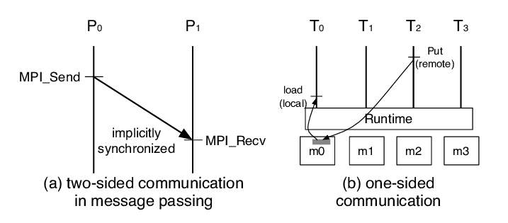
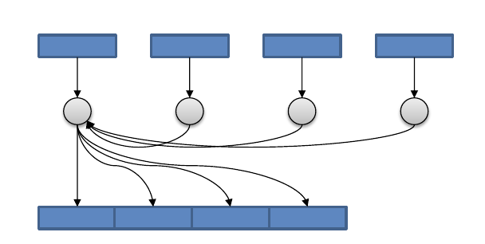
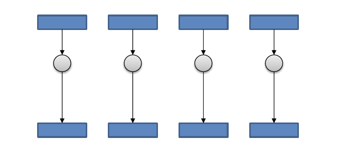
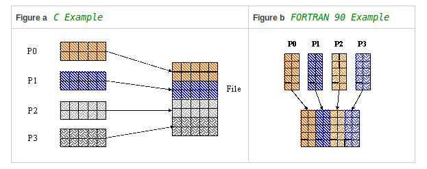

MPI Interface¶
One-sided Communication in MPI¶
Motivation¶
The receiver does not know how much data to expect (non-conforming).
Avoid send/recv delay.
Basic Idea¶
The basic idea of one-sided communication models is to decouple data movement with process synchronization.
Should be able to move data without requiring that the remote process synchronize
Each process exposes a part of its memory to other processes
Other processes can directly read from or write to this memory
In one-sided MPI operations, also known as RDMA or RMA (Remote Memory Access) operation.
Advantages of RMA Operations¶

Can do multiple data transfers with a single synchronization operation
Bypass tag matching
Some irregular communication patterns can be more economically expressed
Can be significantly faster than send/receive on systems with hardware support for remote memory access, such as shared memory systems.
Irregular Communication Patterns with RMA¶
If communication pattern is not known a priori, but the data locations are known, the send-receive model requires an extra step to determine how many sends-receives to issue
RMA, however, can handle it easily because only the origin or target process needs to issue the put or get call
This makes dynamic communication easier to code in RMA
Creating Public Memory¶
Any memory created by a process is, by default, only locally accessible
Once the memory is created, the user has to make an explicit MPI call to declare a memory region as remotely accessible
MPI terminology for remotely accessible memory is a“window”
A group of processes collectively create a “window object”
Once a memory region is declared as remotely accessible, all processes in the window object can read/write data to this memory without explicitly synchronizing with the target process
Basic RMA Functions for Communication¶
MPI_Win_create exposes local memory to RMA operation by other processes in a communicator
Creates window object MPI_Win_free deallocates window object
MPI_Win_Create_Dynamic creates an RMA window, to which data can later be attached.
Only data exposed in a window can be accessed with RMA ops
Initially “empty”
Application can dynamically attach/detach memory to this window by calling MPI_Win_attach/detach
Application can access data on this window only after a memory region has been attached
MPI_Put moves data from local memory to remote memory
MPI_Get retrieves data from remote memory into local memory
MPI_Accumulate updates remote memory using local values
Data movement operations are non-blocking.
Subsequent synchronization on window object needed to ensure operation is completed.
Parallel I/O¶
I/O in HPC Applications¶
High Performance Computing (HPC) applications often
Read initial conditions or datasets for processing
Write numerical data from simulations
Saving application-level checkpoints
In case of large distributed HPC applications, the total execution time can be broken down into the computation time, communication time, and the I/O time
Optimizing the time spent in computation, communication and I/O can lead to overall improvement in the application performance
However, doing efficient I/O without stressing out the HPC system is challenging and often an afterthought
Addressing the I/O Bottlenecks¶
- Software support for parallel I/O is available in the form of
Parallel distributed file systems that provide parallel data paths to storage disks
MPI I/O
Libraries like PHDF5, pNetCDF
High-level libraries like T3PIO
Understand the I/O strategies for maintaining good citizenship on a supercomputing resource
Real-World Scenario¶
Parallel Programs Doing Sequential I/O¶
Parallel I/O - One file per process¶
MPI I/O¶
- Defined in the MPI standard since 2.0
Uses MPI datatypes to describe files
Uses send/receive like operations to read/write data
Common interface for all platform/languages
Provides high-performance (parallel) I/O operations
HDF5: Hierarchical Data Format¶
HDF5 Nice Features¶

Interface support for C, C++, Fortran, Java, and Python
Supported by data analysis packages (Matlab, IDL, Mathematica, Octave, Visit, Paraview, Tekplot, etc. )
Machine independent data storage format
Supports user defined datatypes and metadata
Read or write to a portion of a dataset (Hyperslab)
Runs on almost all systems
PHDF5 Overview¶
- PHDF5 is the Parallel HDF5 library.
You can write one file in parallel efficiently!
Parallel performance of HDF5 very close to MPI I/O.
Uses MPI I/O (Don’t reinvent the wheel)
MPI I/O techniques apply to HDF5.